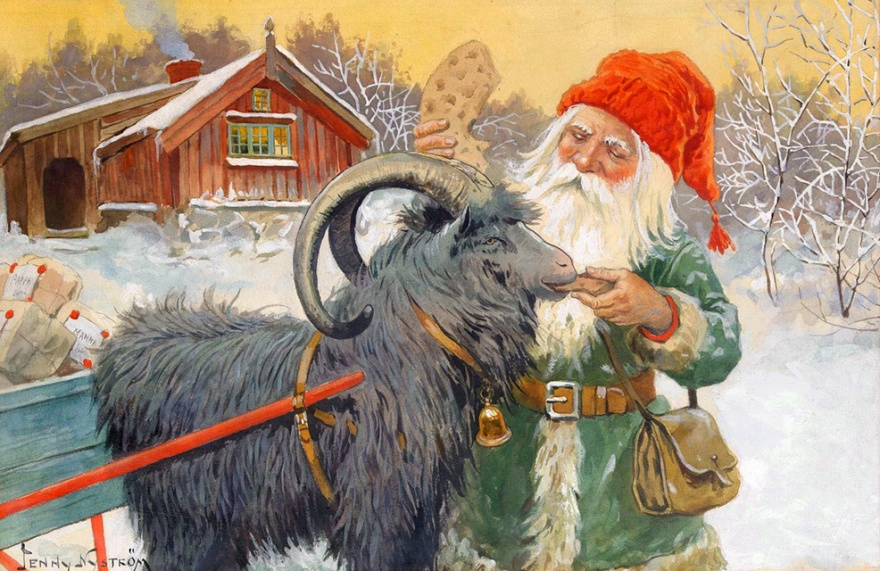

In Sweden, the most important day is Christmas Eve. A special meal is prepared for this purpose—ham, fish, and beans—this is also the occasion when relatives make gifts to each other. Many Swedes go to church on Christmas morning. Christmas is called Jul in Sweden and is followed by other holidays. Santa has a different appearance in these lands: he is represented as a dwarf dressed in red, with a white beard, a big fan of rice with milk, the traditional Swedish Christmas food. In the beginning, tree ornaments were made of painted wood, depicting animals and children's faces. Swedes discover Christmas surprises in a sack buried deep in the snow.
